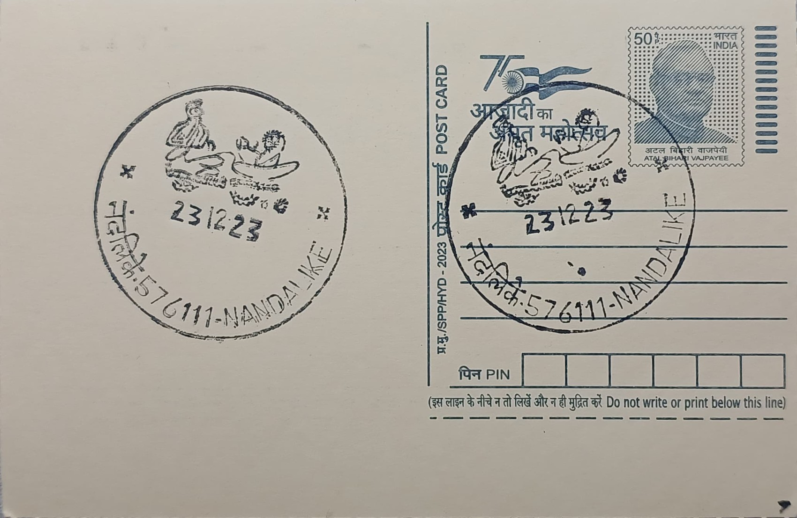

Kavi Muddana & Manorame
ಕವಿ ಮುದ್ದಣ ಮತ್ತು ಮನೋರಮೆ


Nandalike Lakshminaranappa was born on 24 January 1870 in the village of Nandalike in Karkala taluk of present-day Udupi district, and came to be known to Kannada readers almost exclusively by his pen name, Muddana. The name itself, affectionate and diminutive in register, stuck so firmly to his literary identity that his given name is now rarely used outside biographical notices. He earned his living modestly, working for a time as a physical training instructor at a high school in Udupi, even as his private reading and devotion to older Kannada verse forms quietly took shape into a parallel vocation as a poet.
Muddana is regarded as one of the pivotal figures standing at the threshold between classical and modern Kannada literature, a position that has earned him the honorific Mahakavi, or 'great poet,' and the description of him as a harbinger of the Kannada literary renaissance. His writing drew on the older Champu tradition, a mixed verse-and-prose form long used for court and devotional literature, but he reshaped it with a conversational intimacy that anticipated the modern Kannada novel and essay. This hybrid status, neither fully classical nor fully modern, is precisely why literary historians credit him with opening the path that subsequent generations of Kannada prose writers would follow.
His most significant work is Sri Ramashwamedha, also rendered as Ramashwamedham or Sri Ramapattabhisheka Raghunatha Charitre Sangraha, composed in the final years of the nineteenth century and left not fully complete at his death. In it, Muddana introduced the sallapa, a device structured as a lively, often playful conversation between the narrator-poet and his imagined wife, through which episodes of the Ashwamedha sacrifice performed by Rama in the Ramayana are unfolded. His other notable works include the Yakshagana composition Ratnavati Kalyana, Sri Rama Pattabhisheka, and Adbhuta Ramayana, each reflecting his grounding in the oral and performance traditions of coastal Karnataka alongside his literary ambitions.
The most distinctive and lasting element of his work is Manorame, the fictional wife-narrator he addresses throughout Ramashwamedha, whose questions, teasing, and curiosity give the narrative its characteristic rhythm of dialogue rather than straightforward recitation. Manorame became so closely identified with Muddana's authorial voice that she is now treated almost as a companion figure in his biography rather than merely a literary device, and the pairing of 'Muddana and Manorame' is how the subject is popularly invoked on commemorative material, including philatelic and numismatic issues. Muddana died on 15 February 1901 at the age of 31, after a life marked by poverty and ill health that cut short what was already a modest literary output.
His legacy has been marked through formal state recognition: a postage stamp honouring Mahakavi Muddana was issued on 1 November 2017, and a commemorative Rs 150 silver-alloy coin was released in January 2022 to mark the 150th anniversary of his birth, bearing his image alongside the years 1870 to 2020. A memorial auditorium known locally as Kavi Mane was inaugurated at Nandalike in 1987, decades after its foundation stone was laid in 1958 on his birth anniversary, though press reports in subsequent years have noted cracking walls and lapsed upkeep at the site, underscoring the gap between his literary stature and the modest local infrastructure that marks his birthplace today. It is this birthplace, now served by the Nandalike Branch Post Office in Udupi district, that the postal pictorial cancellation commemorates, keeping Muddana's and Manorame's names attached to the small village where his writing began.
| Date of Introduction | January 24, 2015 |
|---|---|
| Address | Branch Postmaster, |
| Nandalike BO, | |
| Udupi (dt.), Karnataka - 576111. |